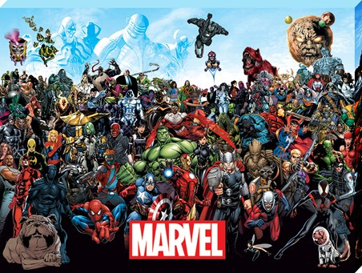
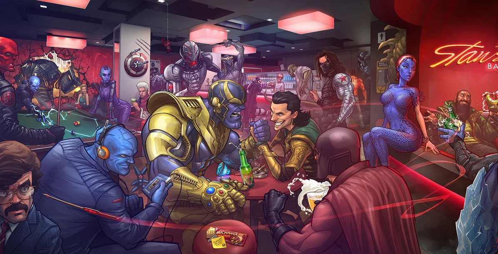
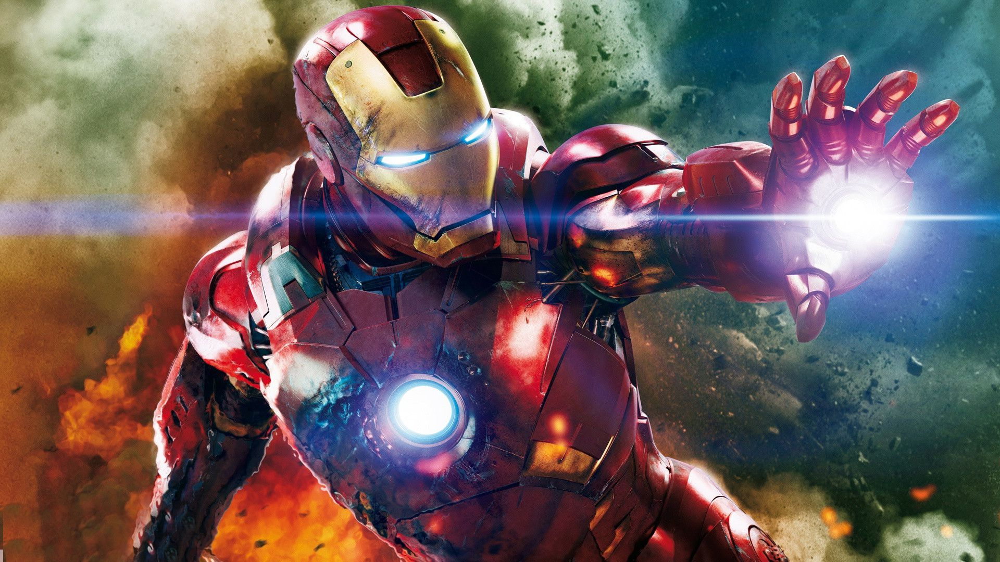

TOP 25 მარველის სუპერგმირი ING-ს მიხედვით
25. jessica jones/ჯესიკა ჯონსი
24.blade/ბლეიდი
23.ghost rider/მბრბოლელი მოჩვენება
22.captain marvel/კაპიტანი მარველი
21.luke cage/ლუკ ქეიჯი
20.spider-woman/ქალი ობობა
19.silver surfer/ვერცხლისფერი სერფერი
18.beast/მხეცი
17.thing/არსება
16.kitty pryde/კეიტი პრეიდი
15.doctor strange/დოქტორი სტრეინჯი
14.black panther/შავი პანტერა
13.the invisible woman/უხილავი ქალი
12.nick fury/ნიკ ფიური
11.storm/შტორმი
10.iron man/რკინის კაცი
9.professor X/პროფესორი X
8.hulk/ჰალკი
7.cyclops/ციკლოპი
6.thor/თორი
5.jean grey/ჯინ გრეი
4.wolverine/სამურავი (ვოლვერინი)
3.daredevil/თავზეხელაღებული
2.captain america/კაპიტანი ამერიკა
1.spider-man/ადამიანი ობობა
TOP 25 მარველის ბოროტმოქმედები IGN-ს მიხედვით
25..M.O.D.O.K./მოდოკი
24.the abomination/აბომბა
23.the enchantress/ჯადოქარი
22.the sentinels/სენტინელები
21.viper/ვიპერი
20.lady deathstrike/ლედი დეთსთრიკი
19.annihilus/ანიჰილუსი
18.ultron/ალტრონი
17.galactus/გალაქტუსი
16.kang/კანგი
15.bullseye/ბულზაი
14.venom/ვენომი
13.green goblin/მწვანე გობლინი
12.juggernaut/ჯაგერნაუტი
11.sabethoot/ხმალკბილა
10.mystique/მისტიკი
9.kingpin/კინგფინი
8.doctor octopus/დოქტორი რვაფეხა (ოქტოპუსი)
7.apocalypse/აპოკალიფსი
6.thanos/თანოსი
5.dark phoenix/ბნელი ფენიქსი
4.loki/ლოკი
3.red skull/წითელი თავისქალ
2.magneto/მაგნიტო
1.doctor doom/დოქტორი დუმი
8 ფაქტი კაპიტანი ამერიკის სესახებ...

1)მას ასევე ეძახდნენ სუპერ ამერიკას
2)მისი პირველი ფილმი გამოვიდა 1944 წელს
3) სუპერ ჯარისკაცის შრატმა მას უფრე მეტი რამ მისცა ვიდრე მხოლოდ ძალა.
5)კაპიტანი ამერიკა არ ყოფილა ყოველტვის სტივ როჯერსი.
6)ის არ იყო ორიგინალი წევრი შურისმაძიებლების.
7)კრის ევანსმა სამივე კაპიტანი ამერიკის ფილმზე თქვა უარი მაგრამ მაინც დაითანხმეს :)
8) მან აწია თორის ურო ესეიგი ის არის ღირსეული.
7 ფაქტი რკინის კაცის შესახებ.
1) J.A.R.V.I.S. არის მისი შემოკლებული სახელი. მას აქვს ძალიან ვრცელი სახელი.
2) ტონი სტარკი სახელის შექმნა მომდინარეობს Howard Hughes-ისგან
3) მანდარინის გამოჩენა თავიდან სურდათ რკინის კაცის პირველ ნაწილში..
4) რკინის კაცის ფანებმა ააშენეს რკინის კაცის ანალოგიური კოსტუმი
5) რკინის კაცის კოსტუმი მიახლოვებულია რეალობასთან.
6) რკინის კაცი იგივე ტონი სტარკი 50-ი წლისაა.
7) რკინის კაცის კოსტუმს შეუძლია აწიოს 100 ტონა რაც საკმაოდ ბევრია